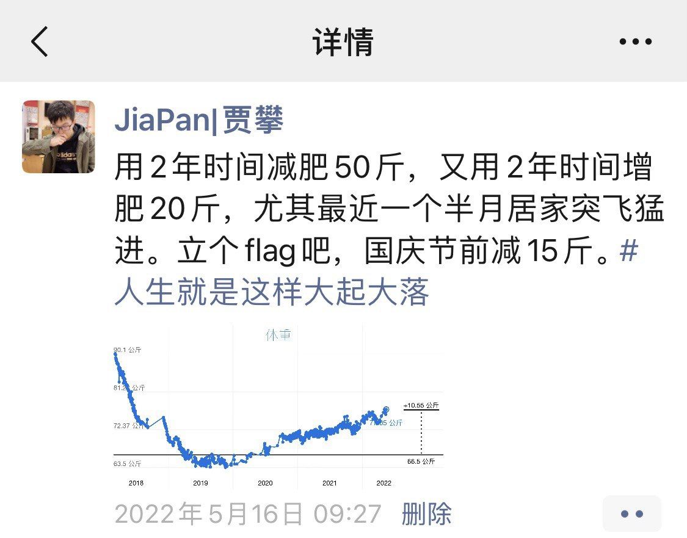

今天是六一儿童节，祝各位大宝宝小宝宝儿童节快乐🌸
上周读完了 《掌控习惯》 这本书，里边总结了四个定律来培养好习惯或者戒除不良习惯，我列出这四个定律和每个定律给出的几个主要方案，在每个方案下写上自己可以将此应用在哪些地方，同时会写一些自己的感想。
第一定律：让它显而易见
填写习惯「积分卡」；记下你当前的习惯并留意他们
+早上不赖床
=洗脸刷牙上厕所
+洗漱期间听红楼梦、播客
-上厕所时候玩游戏
+上厕所时候学英语
+手冲一杯很淡的美式，可以提神、让自己多喝水
+使用 Things 管理自己的待办事项
-工作或者看书的空档没有思路时会刷会手机
-外边走路时会不自主的拿出手机，虽然也不知道要做什么
=边走路变听播客
+读书
=带娃
+背 Anki
=看邮件
-看 Telegram、Twitter
+每周一次慢跑
+晚上在 10:30 前做好睡眠准备
应用执行意图：「我将于【时间】 在【地点】【行为】。」
- 我将于早晚洗漱期间听播客。
- 我将于上下班的地铁上，根据当时的状态（如地铁拥挤情况、自身状况）选择阅读、听课或者听播客。
- 我每天 8:30 前出门，下地铁后步行到公司，下班步行到地铁。
- 我将于每天中午 12:00-14:00 其他人午休这段安静的时间练习写作
应用习惯叠加：「继【当前习惯】之后，我将会养成【新习惯】。」
这个我没有想出与我自己相匹配的场景，先从书中抄几条吧（同时会应用在自己身上），等自己有了灵感再补充。
- 当我想买超过 200 元的东西时，我会等 24 小时后再买。
- 电话铃响时，我会深吸一口气，微笑着接电话。
- 每当买一件新物品时，我会将一些旧物品送人会丢弃。
设计你的环境，让好习惯的提示清晰明了。
在地铁上读书时我会戴上 AirPods Pro，播放我长期在听的那些钢琴曲，可能是已经听的太长时间吧（2年？），每当听到这些音乐后我很容易就能进入阅读状态，同时 AirPods Pro 的降噪效果也能给我提供一个不那么嘈杂的环境，更容易让我沉浸在阅读中。
这里附上我的歌单
第一定律反用：让它脱离视线
降低出现频率。把习惯的提示清除出你所在的环境。
工作时将手机屏幕扣在桌面上，晚上睡觉前将手机放在卧室充电，十点后就不再玩手机和其他点子设备（Kindle除外），这样可以避免睡前刷手机影响睡眠。
第二定律：让它有吸引力
利用喜好绑定。用你喜好的行为强化你需要的动作
- 我要在每天冲完咖啡回工位后冥想一分钟（最近一段时间没有冥想了，要重新培养起来）；
- 待补充…
加入把你喜好的行为视为正常行为的文化群体
这也是为什么家长喜欢让自己的孩子和那些更优秀的孩子在一块玩的原因，人会相互影响，尤其是那些和我们亲近的人。
这也是为什么有时候我们学习一样东西，自学的效率没有报一个班和大家一起学高的原因之一吧（另一个原因是能得到专业的指导），好多人一起学可以创造一种氛围，让你觉得这个事情也并没有那么难。
同样和自己志趣相投的一群人一起工作更能保持充足的热情，书中提到「没有什么比群体归属感更能维持一个人做事的动力了」。
通过这一节我也知道了我们为什么会在焦虑、无所事事时喜欢刷朋友圈、抖音、淘宝的原因：「当我们不确定改如何做时，我们都会期待得到团体的指导」。我们想看看其他人在做什么，想看看其他人在玩什么，想看看其他人在买什么。
我们会从众，希望能被这个社会所接纳，哪怕整个社会都在做的可能是一件不正确的事，我们为了得到认可同样也会选择做这件事。比如最近一段时间的每天一次核酸监测，再过几年再回头来看，我不认为这是正确的。「我们宁愿跟众人一起犯错，也不愿特立独行坚持真理。」
创设一种激励仪式。在实施低频行动之前先做一件让你特别喜好的事
第二定律反用：让它缺乏吸引力
重新梳理你的思路。罗列出戒除坏习惯带来的益处
- 戒除吃饭时喜欢配辣酱的习惯，这可以让我吃的更健康，可以控制食量，也能避免饭后和大量的水，更近一步晚上不至于总上洗手间能有更好的睡眠。恢复正常办公，回到公司后我要把公司冰箱里我的那瓶辣酱扔掉。
- 戒除刷手机的习惯后我会有很多时间做其他更有意义的事情
- 戒除拖延的时间后也压缩出更多的时间做其他事情
- 戒除看到感兴趣的商品脑子一热就下单的习惯后，可以节省一些钱还能让自己生活的空间更简洁。
- 戒除暴饮暴食的习惯后，我可以更好的做好体重管理、健康管理，也不至于总因为吃的过撑而懊恼。
- 晚上不再喝大量饮料（包括牛奶）或吃西瓜类水份糖分过高的水果，这样对健康有利，同时不会再半夜醒来上厕所，提升睡眠质量。
第三定律：让它简便易行
减小阻力。减少培养好习惯的步骤
我现在只在电脑上安装了 Anki，手机上的 Anki 是付费的，价格还不低，就一直没装，我准备今天就购买并安装上手机版。我现在每天做知识回顾的时候都需要使用电脑，无法随时随地的回顾知识，多少有些阻力。
备好环境。创造一种有利与未来行为的环境
我的书包里时刻装着一本书和 Kindle，出门乘坐交通工具或者等人的时候，可以随时拿出来进行阅读，同时书包里还有铅笔、荧光笔，可以随时让我做标记使用。
再有，比如我要求自己在周六下午慢跑一次，我在白天或者提前一天就把跑步需要的衣服鞋子准备好，去跑步的概率会更大一些，因为到了那个时间我只需把衣服换好就可以出门跑步，不需要再去想着需要先找衣服、换衣服才能出门。
把握好决定性时刻。优化可以产生重大影响的小选择
- 路过便利店，没有必需品要买就不要想着进去转一圈
- 如果外出吃饭想吃健康餐，就选择去专门提供健康餐的店
- 待补充…
利用两分钟准则。在能够锁定你未来行为的技术和物品上有所犹如??
我现在刚刚开始尝试练习写作，写作一定是一个对未来非常好的投资，每当我需要写点什么的时候，即使自己不想写我也会要求自己坐在电脑前，打开写作工具只写一段就好。
想到另一个用途：当我非常想做点杀时间的事情，比如打局游戏、刷会短视频，我会跟自己说先看会书吧，就看两分钟就行。如果两分钟过去心里没那么浮躁可以读下去了就会继续读，如果还是读不下去就按照之前的计划想做什么做点什么。
第三定律反用：让它难以施行
增大阻力。增加实行坏习惯的步骤
这个方法可以利用在避免浪费太多时间在刷手机上，我将自己容易沉迷的软件收在一个目录中，而不是直接平铺在桌面上，这样在每次打开手机时就不会直接看到它们，同时将能关闭的推送关闭，很多不必要的软件如果没有推送我们是不会主动想到去打开它的，更进一步，我们可以尝试卸载 APP，比如我手机中现在就没有抖音、快手这钟既浪费我时间又会降低我心智的软件。
如果我们把手机的面部识别功能关闭，是不是能较少我们划手机的次数？有时候我们打开手机是个无意识行为，看一眼手机随手往上一滑就解锁了，然后人们会顺着这个动作不自主的启动后边一系列的动作。前段时间人们在公共场合都需要戴口罩，在使用面部识别时会比较麻烦，这应该多少也会减少玩手机的次数吧，然而后来 Apple 支持了带口罩识别，「破坏」了这个隐性的好处。我因为有 Apple Watch，所以自始至终都可以在佩戴口罩的情况下解锁 😂
利用承诺机制。锁定未来会有利于你的选择项
我在两周前发了个朋友圈，表示自己又又又要开始减肥了，算是一种对公共的承诺，虽然没有奖惩措施，但也这会给我提供动力，好让我在约定时间内再次在公共面前交上答卷。这样能带来的好处是我能让自己恢复到正常体重，而且能让其他人看到我是一个言必行、行必果，做事靠谱的人。

第四定律：让它令人愉悦
利用增强法。完成一套习惯后立即奖励自己
Apple Watch 会在我每次完成计划的运动量后亮出三环的烟花，每月完成运动天数后会奖励一个奖牌。
让「无所事事」变得愉快。当避免坏习惯时，设计一种让由此带来的好处显而易见的好处而显而易见的方式
- 早上步行到公司的路上可以听播客；
- 在跑步过程中听点有意思的东西；
利用习惯追踪法。记录习惯倾向，不要中断
这个方法我在保持体重和培养阅读习惯上有所使用。为了不让自己体重超出某个范围，我会每天早上称一次体重，如果体重和前一天有较大的 diff，我就会回顾昨天做了什么吃了什么。在阅读方面，我会将自己计划读、正在读、读完的书单记录下来，对自己能起到一定的激励作用。
我阅读时更喜欢读纸质书是因为便于追踪，人是视觉动物，读纸质书可以看到自己已经读过了多少，还剩多少没有读，肉眼可见读过的页数越来越多、剩余的页数越来越少，也能继续激励自己往下读。相比来说，电子书在这上面就没有这个优势了，只有右下角冷冰冰的数字告诉我们当前进度是多少。
绝不连续错过两次。如果你忘了做，一定要尽快补救
减肥是长期的事，如果前一天因为聚餐或者嘴馋吃了过量的食物，也不要过于自责，第二天要快速调整状态，可以选择跳过一顿早餐，午餐也减些量作为弥补。
学习也是一样，我给自己设置了一些固定每天要学的东西作为日课，如果有一天因为某种原因（如身体不适、公司事项积压）而错过了，我要在第二天或者周末的时候做些追赶，最差的情况哪怕不做追赶，只要第二天不要再错过就好。「成功最大的威胁不是失败，而是倦怠。」
第四定律反用：让它令人厌恶
找一个问责伙伴。请人监督你的行为
现在没有这样的伙伴了，自己监督好自己吧。
创立习惯契约，让坏习惯的恶果公开化并令人难以忍受
还是上边减肥的那个朋友圈，无论有没有减到自己承诺的体重，我都会在十月一日当天把结果公布出来。